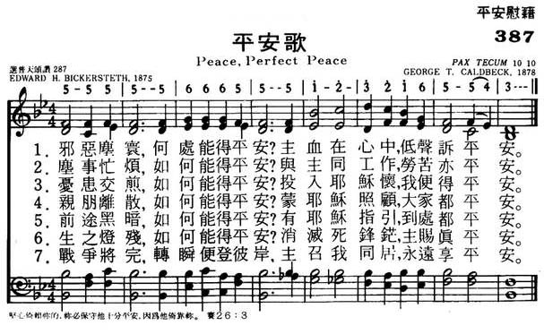
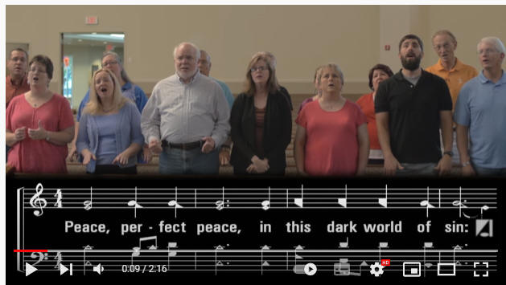

|
|
|
|
1 Peace, perfect peace, in this dark world of sin? 2 Peace, perfect peace, by thronging duties pressed? 3 Peace, perfect peace, death shadowing us and ours? 4 Peace, perfect peace, our future all unknown? 5 It is enough: earth's struggles soon shall cease, |
387平安歌
1.邪恶尘寰，何处能得平安？
主血在心中，低声诉平安。 2.尘世忙烦，如何能得平安？ 与主同工作，劳苦也平安。 3.忧患交煎，如何能得平安？ 投入耶稣怀，我便得平安。 4.亲朋离散，如何能得平安？ 蒙耶稣照顾，大家都平安。 5.前途黑暗，如何能得平安？ 有耶稣指引，到处都平安。 6.生之灯殘，如何能得平安？ 消灭死锋芒，主赐真平安。 7.战争将完，转身便登彼岸， 主召我同居，永远享平安。 |
|
https://www.mred365.cn/szxg/7390.html
 https://hymnary.org/hymn/WASH1957/page/306
|
|
|
|
|


Praise And Harmony Singers "Peace Perfect Peace" https://youtu.be/ibqgZxWa6bM -
Peace, Perfect Peace, in This Dark World of Sin (Pax Tecum) https://youtu.be/jggIZ_T8prM -
Peace, Perfect Peace (is the gift of Christ our Lord) - Primary School Hymn https://youtu.be/lj9A4klqbqY 
LX1903
Peace, Perfect Peace
387平安歌
| Text: | Peace, Perfect Peace |
| Author: | Edward H. Bickersteth, 1825-1906 |
| Tune: | PAX TECUM |
| Arranger: | Charles J. Vincent, 1852-1934 |
| Composer: | George T. Caldbeck, 1852-c. 1912 |
| Short Name: | Edward Henry Bickersteth |
| Full Name: | Bickersteth, Edward Henry, 1825-1906 |
| Birth Year: | 1825 |
| Death Year: | 1906 |
Bickersteth, Edward Henry,

D.D., son of Edward Bickersteth, Sr. born at Islington, Jan. 1825, and educated at Trinity College, Cambridge (B.A. with honours, 1847; M.A., 1850). On taking Holy Orders in 1848, he became curate of Banningham, Norfolk, and then of Christ Church, Tunbridge Wells. His preferment to the Rectory of Hinton-Martell, in 1852, was followed by that of the Vicarage of Christ Church, Hampstead, 1855. In 1885 he became Dean of Gloucester, and the same year Bishop of Exeter. Bishop Bickersteth's works, chiefly poetical, are:—
-
(l) Poems, 1849; (2) Water
from the Well-spring, 1852; (3) The
Rock of Ages, 1858 ; (4) Commentary
on the New Testament, 1864; (5) Yesterday,
To-day, and For Ever, 1867; (6) The
Spirit of Life, 1868; (7) The Two
Brothers and other Poems, 1871; (8) The
Master's Home Call, 1872 ; (9) The
Shadowed Home and the Light Beyond, 1874; (10) The
Beef and other Parables, 1873; (11) Songs
in the House of Pilgrimage, N.D.; (12) From
Year to Year, 1883.
As an editor of hymnals, Bp. Bickersteth has also been most successful. His collections are:—
-
(1) Psalms & Hymns, 1858, based on
his father's Christian Psalmody, which passed through several editions;
(2) The Hymnal Companion, 1870; (3) The
Hymnal Companion revised and enlarged, 1876. Nos. 2
and 3, which are two editions of the same collection, have attained to
an extensive circulation. [Ch. of England Hymnody.]
About 30 of Bp. Bickersteths hymns are in common use. Of these the best and most widely known are:—" Almighty Father, hear our cry"; "Come ye yourselves apart and rest awhile"; "Father of heaven above"; "My God, my Father, dost Thou call"; "O Jesu, Saviour of the lost"; "Peace, perfect peace"; "Rest in the Lord"; "Stand, Soldier of the Cross"; " Thine, Thine, for ever"; and "Till He come.” As a poet Bp. Bickersteth is well known. His reputation as a hymn-writer has also extended far and wide. Joined with a strong grasp of his subject, true poetic feeling, a pure rhythm, there is a soothing plaintiveness and individuality in his hymns which give them a distinct character of their own. His thoughts are usually with the individual, and not with the mass: with the single soul and his God, and not with a vast multitude bowed in adoration before the Almighty. Hence, although many of his hymns are eminently suited to congregational purposes, and have attained to a wide popularity, yet his finest productions are those which are best suited for private use.
-John Julian, Dictionary of Hymnology (1907)
Notes
Peace, perfect peace, in this dark world of sin, p. 888, i. Bishop Bickersteth's son, the Rev. S. Bickersteth, D.D., Vicar of Leeds, has kindly furnished us with the following history of this hymn:—
“This hymn was written by Bishop Edward Henry Bickersteth, D.D., while he was spending his summer holiday in Harrogate in the year 1875, in a house facing the Stray, lent to him by his friend Mr. Armitage, then Vicar of Casterton.
"On a Sunday morning in August, the Vicar of Harrogate, Canon Gibbon, happened to preach from the text, “Thou wilt keep him in perfect peace whose mind is stayed on Thee," and alluded to the fact that in the Hebrew the words are "Peace, peace," twice repeated, and happily translated in the 1611 translation by the phrase, “Perfect peace." This sermon set my father's mind working on the subject. He always found it easiest to express in verse whatever subject was upper¬most in his mind, so that when on the afternoon of that Sunday he visited an aged and dying relative, Archdeacon Hill of Liverpool, and found him somewhat troubled in mind, it was natural to him to express in verse the spiritual comfort which he desired to convey. Taking up a sheet of paper he then and there wrote down the hymn just exactly as it stands, and read it to this dying Christian.
I was with my father at the time, being home from school for the summer holidays, and I well recollect his coming in to tea, a meal which we always had with him on Sunday afternoons, and saying, "Children, I have written you & hymn," and reading us "Peace, perfect peace," in which, from the moment that he wrote it, he never made any alteration.
"I may add that it was his invariable custom to expect each one of us on Sundays at tea to repeat a hymn, and he did the same, unless, as frequently happened, he wrote us a special hymn himself, in which way many of his hymns were first given to the Church.
"It is not always noticed that the first line in each verse of "Peace, perfect peace," is in the form of a question referring to someone or other of the disturbing experiences of life, and the second line in each verse endeavours to give the answer. Some years later than 1875 an invalid wrote to my father pointing out that he had not met the case of sickness, which induced him to write two lines which appropriately can be added, but which he himself never printed in his own hymn-book, so that I do not know how far he would wish them to be considered part of the hymn.
“The hymn has been translated into many tongues; and for years I doubt if my father went many days without receiving from different people assurances of the comfort which the words had been allowed to bring to them. The most touching occasion on which, personally, I ever heard it sung was round the grave of my eldest brother, Bishop Edward Bickersteth (of South Tokyo), at Chiselden, in 1897, when my father was chief mourner."
This unusually interesting account of this widely used hymn will be of permanent interest to lovers of this lyric, and will set at rest all speculations as to its origin and design.
--John Julian, Dictionary of Hymnology, New Supplement (1907)
Tune Information
| Title: | PAX TECUM |
| Composer: | George Thomas Caldbeck |
| Arranger: | Charles J. Vincent (1877) |
| Meter: | 10.10 |
| Incipit: | 55555 66655 51232 |
| Key: | C Major |
| Copyright: | Public Domain |
| Short Name: | George Thomas Caldbeck |
| Full Name: | Caldbeck, George Thomas, 1852-1918 |
| Birth Year: | 1852 |
| Death Year: | 1918 |
George Thomas Caldbeck United Kingdom 1852-1918. Born in Waterford, Ireland, he attended the National Model School, Waterford, and Islington Theological College. His desire to be a missionary was thwarted by his poor health. He returned to Cork and became a schoolmaster and evangelist in ireland. In 1888 he moved to London as an independent itinerant preacher. He was arrested in 1912 for selling scripture cards door to door without a license. The judge dismissed the case upon learning he was composer of the hymn tune” Pax Tecum.”. At the time he was living in a church hostel. He died in Epsom, Surrey.
平安歌 Peace, Perfect Peace
邪惡塵寰，何處能得平安？主血在心中，低聲訴平安。
塵事忙煩，如何能得平安？與主同工作，勞苦亦平安。
憂患交煎，如何能得平安？投入耶穌懷，我便得平安。
親朋離散，如何能得平安？蒙耶穌照顧，大家都平安。
前途黑暗，如何能得平安？有耶穌指引，到處都平安。
 (請點耳機收聽)
(請點耳機收聽)
許多時候一首詩歌是因一篇講章而產生，本詩也是如此。
1875年8月，畢珂泰（Edward H. Bickersteth,1825-1906）在英國哈羅該（Harrogate）渡假。 星期天的早晨，他去崇拜，那天牧師講以賽亞書26:3「堅心倚賴你的，你必保守他十分平安，因為他倚靠你。」他講到依照希伯來文，「平安，平安」是疊句，意思是「完全平安」， 這信息在畢珂泰心中不斷地縈迴。
當天下午，他去探訪一位病重的長者，老人怯於面臨死亡，惴惴不安。 畢珂泰將早上聽到的信息安慰他，並講解甯靜與平安的區別。 甯靜是被動的，屬世的，指在風雨中的甯靜。平安是主動的，屬天的，基督徒的心和靈都確實擁有，不是世界所能給予。 祇要我們謹守神的誡命，親近神，就能抵禦一切來自仇敵的恐懼，而獲得主內的平安和喜樂。
長者在他安慰中入睡，他隨手寫下了五節詩，每節的首句都是「平安，完全平安」，第一行是問，第二行是答。 畢珂泰回家後，在全家用下午茶時，讀給家人聽。 他將這首詩印在卡片上分贈友人。
後來有一位病人寫信給他，提到這首詩沒有講到病痛和死亡，因此他又補寫了兩節：
「生之燈殘，如何能得平安？消滅死鋒鋩，主賜真平安。
戰爭將完，轉瞬便解彼岸。主召我同居，永遠享平安。」
1897年，畢珂泰的長子在日本逝世，他遠赴東京，主持葬禮，眾人在墓園唱此歌時，感人至深，令參加喪禮者難於忘懷此情此景。 事後畢珂泰的一個姊妹對他說:「這首詩美中不足的是未提到今世的逆境及病痛。」於是他再加了一節。但未被列入聖詩集中。
「坎坷流連，如何能得平安？有耶穌同情，逆境亦平安。」
畢珂泰出身英國聖公會的一個家庭，祖父是著名的外科醫生，父親是牧師也是聖公會差會的首任總幹事。 親屬中多人擔任神職。
1845年，畢珂泰接受聖職，在各教區牧會；1885年獲劍橋三一學院神學博士後，升為主教。 畢珂泰著作有十二本，多數是詩集。 他的「禱告和聖詩良伴」（Hymnal
Companion to the Book of Common Prayer）被認為聖公會詩集中最具有代表性的傑作。 他的詩有三十首被編入英美聖詩集中。
他的詩多數達觀，主題清新，韻律優美，詩意盎然，適於個人靈修。
這首詩被譯成多種文字，1878年神學生柯貝克（George Thomas Caldbeck, 1852 -
1918）為之譜曲，這是他惟一的作品。柯貝克在學術上頗有成就，但性情孤僻。他在神學院時曾受海外宣教的訓練，但因健康未能如願。
他教書多年後，開始獨立傳福音工作，在街頭露天講道。 目前聖詩集中的歌譜是經范笙（Charles J. Vincent, 1852-1934）修訂。
這首詩，有些教會用啟應方式對答輪唱。
中英文聖詩集參考
英文歌名 Peace,
Perfect Peace
頌主新歌 387
頌主新歌(中英雙語) 392
生命聖詩 334
聖詩 239
台語聖詩 323
恩頌聖歌 333
十月十三日 平安歌
「應當一無罣慮，只要凡事藉著禱告，祈求，和感謝，將你們所要的告訴神。 神所賜出人意外的平安，必在基督耶穌裡，保守你們的心懷意念。」腓4:6,7
我們有一位父在天上，祂是全能的，祂愛我們，正如愛祂的獨生子一般，祂願意隨時隨地救濟我們，幫助我們。
『凡事』，不只是房屋著火，不只是所愛的病危，『凡事』包括日常生活中一切大大小小的事情；我們應當將『凡事』帶到神面前去！當我們夜半醒來，輾轉不能成眠的時候，就該頂自然地傾向神去，與祂談話，將我們種種瑣碎的事情帶到祂面前去－將一切家庭方面、職業方面的困難全告訴祂。
『藉著禱告祈求』，站在乞丐的地位上，用誠懇和堅忍來等候祂。
『和感謝』，我們應當隨時存感謝的心。如果我們以為沒有甚麼可叫我們感謝的話，至少有一件事是值得我們感謝的－祂救我們脫離死亡。祂給我們祂的道－祂的兒子－和聖靈。哦，這就彀叫我們大聲感謝讚美了。
『神所賜出人意外的平安，必在基督耶穌裡，保守你們的心懷意念。』這是一個何等大、何等真、何等寶貴的祝福！但是這個祝福必須親身經歷過纔會知道，因為這是出人意外的。
哦，讓我們把這些話放在心上。如果我們能一直照著行的話，結果定會叫神得到更大的榮耀。
－－莫勒（Geo. Mueller）
我們應當時時察看自己有沒有甚麼叫我的心得不到安息？如果有的話，就當立刻到神前去對付，直到恢復了內心的鎮靜。
－－賽爾斯（Francis De Sales）
“PEACE, PERFECT PEACE”
“Thou wilt keep him in perfect peace, whose mind is stayed on Thee” (Isa. 26:3)
INTRO.:
A hymn which discusses the perfect peace of those whose minds are stayed on God is “Peace, Perfect Peace” (#223 in Hymns for Worship Revised, #239 in Sacred Selections for the Church). The text was written by Edward Henry Bickersteth (Jr.), who was born on Jan. 25, 1825, at Islington in London, England. His father, also named Edward, was a minister in the Anglican Church who had been at one time a missionary to West Africa, and in 1833 the father was the editor of Christian Psalmody, considered to be the best hymnbook of its day. The younger Bickersteth was educated at Trinity College, Cambridge, graduating with a Doctor of Divinity, and in 1848 became a minister in the Anglican Church like his father. In 1855 he began work with Christ Church in Hempstead. Known for his voluminous writings, which include twelve books of sermons, hymns, and poems, he was appointed editor of The Hymnal Companion to the Book of Common Prayer in 1870, again following in his father’s footsteps.
One Sunday in August of 1875, while vacationing in the town of Harrogate, England, Bickersteth listed to sermon on the subject of peace, delivered by the local minister named Gibbon, who pointed out that in the Hebrew the repetitive phrase “peace, peace” means “perfect peace.” That afternoon, he paid a visit to an aged, dying relative, Archdeacon Hill of Liverpool. The ill man was in a deeply depressed and disturbed state of mind. Eager to be of spiritual help and comfort, Bickersteth picked up his Bible and read the portion of scripture used in the morning’s lesson. Then, while his relative slept, he took a sheet of paper from a nearby desk, quickly jotted the lines of this poem, and read them to the sick man after his awakening. Originally released that year in Bickersteth’s Songs in the House of Pilgrimage, the hymn was later printed on cards and given by the hundreds to people. It is said to have been a favorite of Queen Victoria.
The tune (Pax Tecum) was composed around 1876 for this text by a young student, George Thomas Caldbeck (1852-1918). The following year, it was harmonized to be published in the second edition (1878) of The Hymnal Companion to the Book of Common Prayer by Charles John Vincent (1852-1934). Bickersteth was later appointed Bishop of Exeter and Dean of Gloucester Cathedral in 1885, where he served until 1900, and died in London, England, on May 16, 1906, having edited three hymnbooks and produced at least thirty hymns of his own. His most famous hymn is in the unusual form of a question and answer. The first line of each stanza is a question, while the second line provides the answer. The questions are a series of challenges to our faith, and in each case Jesus is the key that resolves the dilemma, reminding us that only in Jesus Christ can mankind truly know genuine peace.
Among hymnbooks published by members of the Lord’s church for use in churches of Christ, “Peace, Perfect Peace,” has appeared in the 1922 edition of the 1921 Great Songs of the Church (No. 1) and the 1937 Great Songs of the Church No. 2 both edited by E. L. Jorgenson; the 1940 Complete Christian Hymnal edited by Marion Davis; the 1948 Christian Hymns No. 2 and the 1966 Christian Hymns No. 3 both edited by L. O. Sanderson; the 1963 Abiding Hymns edited by Robert C. Welch; the 1963 Christian Hymnal edited by J. Nelson Slater; the 1965 Great Christian Hymnal No. 2 edited by Tillit S. Teddlie; the 1971 Songs of the Church, the 1990 Songs of the Church 21st C. Ed., and the 1994 Songs of Faith and Praise all edited by Alton H. Howard; the 1978/1983 Church Gospel Songs and Hymns edited by V. E. Howard; the 1986 Great Songs Revised edited by Forrest M. McCann; the 1992 Praise for the Lord edited by John P. Wiegand; the 2007 Sacred Songs of the Church edited by William D. Jeffcoat; and the 2009 Favorite Songs of the Church and the 2010 Songs for Worship and Praise both edited by Robert J. Taylor Jr.; in addition to Hymns for Worship and Sacred Selections.
The song is designed to give us comfort and encouragement in the various problems and trials of life.
I. In stanza 1, it is sin that wrecks our peace.
“Peace, perfect peace, in This dark world of sin?
The blood of Jesus Whispers peace within.”
A. This world is a dark world of sin because all of us have sinned: Rom. 3:23
B. However, Jesus shed His blood for the remission of sins: Matt. 26:28
C. Thus, the blood of Jesus is the answer to the problem of sin: Eph. 2:14-17
II. In stanza 2, thronging duties press us and keep us from peace.
“Peace, perfect peace, by Thronging duties pressed?
To do the will of Jesus, this is rest.”
A. All of us have thronging duties and cares which press us daily: Lk. 21:34
B. However, Jesus wants us to do the will of the Father in heaven: Matt. 7:21
C. Hence, doing the will of the Lord is the means by which we can have peace and rest: 2 Thess. 1:7
III. In stanza 3, sorrows surge around us to take peace from our hearts.
“Peace, perfect peace, with Sorrows surging ‘round?
On Jesus’ bosom Naught but calm is found.”
A. Life is filled with its sorrows which surge around us from time to time: Ps. 90:10
B. We cannot literally rest on Jesus’ bosom, but we can still abide in Him: Jn. 15:7
C. Therefore, just as He stilled the storm on Galilee, so Jesus offers us peace and calm: Matt. 8:26
IV. In stanza 4, the unknown future brings fear and removes our peace.
“Peace, perfect peace, our Future all unknown?
Jesus we know, and He is on the throne.”
A. Certainly, we realize that the future is unknown to us: Jas. 4:14
B. However, while we do not know the future, we know Jesus who holds the future: Jn. 17:3
C. Thus, we can trust Jesus, who is the ruler of the universe, to bring us peace so that we need not worry about tomorrow: Matt. 6:34
V. In stanza 5, the thought of coming death often hinders our peace
“Peace, perfect peace, death Shadowing us and ours?
Jesus has vanquished Death and all its powers.”
A. We realize that death is shadowing us and ours because it is appointed for men to die once: Heb. 9:27
B. Yet Jesus has vanquished death and even destroyed him who had the power of death: Heb. 2:14-15
C. Hence, we are no longer under death’s powers and can be at peace because we have nothing to fear from this last enemy: 1 Cor. 15:25-26
VI. In stanza 5, these specific answers should bring us peace.
“It is enough: earth’s Struggles soon shall cease,
And Jesus call us to Heaven’s perfect peace.”
A. Earth’s struggles soon shall cease for Christians because when they die they are at rest from their labors: Rev. 14:13
B. At that time Jesus shall call us when He comes again to take them home: Jn. 14:1-3 (it sounds as if it should be “And Jesus calls us,” but this is in the future and the “shall” of the phrase “Earth’s struggles soon shall cease” is understood here as well)
C. Then we shall experience Heaven’s perfect peace: 1 Pet. 1:3-5
CONCL.:
There is another stanza, which fits between #s 3 and 4 above:
“Peace, perfect peace, with Loved ones far away?
In Jesus’ keeping We are safe, and they.”
After one of Bickersteth’s sisters pointed out that there is nothing specific in the hymn about physical suffering, “That is soon remedied,” he replied. He took up an envelope and wrote the following stanza, apparently never published, on the back:
“Peace, perfect peace, ’mid Suffering’s sharpest throes?
The sympathy of Jesus breathes repose.”
Another of Bickersteth’s famous hymns, written in 1861 for the communion service, is “Till He Come, O Let the Words.” However, his hymn about peace emphasizes the fact that Jesus is our peace and that we can obtain perfect peace only through the presence of Christ in our lives. As we journey on this earth, we need encouragement, and God makes it possible for us to have “Peace, Perfect Peace.”
English clergyman Edward Henry Bickersteth Jr. was an honours graduate of Trinity College, Cambridge. He serve as vicar of Christ Church, Hampstead, was later dean of Gloucester and bishop of Exeter. He edited three hymn books and wrote about 30 hymns himself. In his editorial capacity, he did not hesitate to add words of his own when he sensed a particular hymn was either weak, or its thought incomplete. He did this with both Lead, Kindly Light, and Nearer, My God, to Thee. Two hymns of his own creation are Saviour, Breathe an Evening Blessing, and Till He Come (a lovely Communion hymn).
“Till He come,” O let the words
Linger on the trembling chords,
Let the “little while” between
In their golden light be seen;
Let us think how heaven and home
Lie beyond that, “Till He come.”
See, the feast of love is spread,
Drink the wine, and break the bread;
Sweet memorials, till the Lord
Calls us round His heavenly board;
Some from earth, from glory some
Severed only, “Till He come.”
Another of Bickersteth’s hymns, Peace, Perfect Peace has a unique structure. Each two-line stanza except one begins with a question, and then provides the answer. It may be effectively sung responsively by a congregation, either dividing men and women’s voices or, in a larger group, assigning different sections of the congregation to sing question and answer.
Peace, perfect peace, in this dark world of sin?
The blood of Jesus whispers peace within.
Peace, perfect peace, by thronging duties pressed?
To do the will of Jesus, this is rest.
Peace, perfect peace, with sorrows surging round?
On Jesus’ bosom naught but calm is found.
Peace, perfect peace, with loved ones far away?
In Jesus’ keeping we are safe, and they.
Peace, perfect peace, our future all unknown?
Jesus we know, and He is on the throne.
Peace, perfect peace, death shadowing us and ours?
Jesus has vanquished death and all its powers.
It is enough: earth’s struggles soon shall cease,
And Jesus call us to Heaven’s perfect peace.
This covers many situations that concern us. But when a sister of the bishop’s read the text she noted there is nothing there about physical suffering. “That is soon remedied,” he responded, and jotted down the following. As far as I know, it has never been included with the published hymn, but it would fit nicely after the fifth stanza.
Peace, perfect peace, ’mid suffering’s sharpest throes?
The sympathy of Jesus breathes repose.
Peace, Perfect Peace (hymn)
| Peace, Perfect Peace | |
|---|---|
| Key | B-flat major |
| Genre | Hymn |
| Written | 1875 |
| Text | by Edward H. Bickersteth |
| Based on | Isaiah 26:3 |
| Meter | 10.10 |
| Published | Songs in the House of Pilgrimage (Hampstead, by J. Hewetson, in 1875 or 1876) |
Peace, Perfect Peace is a hymn whose lyrics were written in August 1875 by Edward H. Bickersteth at the bedside of a dying relative in Liverpool.[1][2] He read it to his relative immediately after writing it, to his children at tea time that day,[2] and soon published it along with four other hymns he had written in a tract called Songs in the House of Pilgrimage.[1] Of the dozens of hymns he wrote, this one became the most popular.[3] A century later, it was still a popular choice for Christian funerals.[4]
George Thomas Caldbeck (1852–1918) later wrote the tune, which is usually called Pax Tecum.[5] Caldbeck's tune was substantially altered by a hymnal editor, Charles Vincent.[2]
Each short stanza begins one line asking a simple question about whether peace is possible under a difficult circumstance.[2] The second line answers the question.
The opening phrase of "Peace, perfect peace" is based upon Isaiah 26, verse 3, "Thou wilt keep him in perfect peace whose mind is stayed on Thee". "Perfect peace" is a translation from an epizeuxis of the word for peace the original Hebrew, which adds emphasis.[6][7]